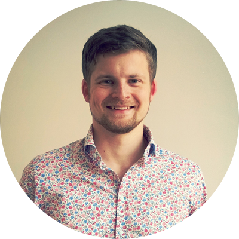

<div class="container">
	<div class="row">

		<div class="col-md-3">
			
		</div>

		<div class="col-md-9">
			<h1>Curriculum vitae</h1>

			<p>
				My name is
				<b>Joakim Gunst</b> and I'm a user experience designer and front-end developer. My passion is to create products that solve
				important real-world problems while being delightful to use. I believe that a constant focus on end users, technical
				expertise and an iterative process is the best way to achieve this.
			</p>

			<h2>Work experience</h2>

			<div>
				<h3>User Experience Designer</h3>
				<h4>
					<a href="https://www.rapal.com">Rapal Oy</a>
					<span class="text-muted ml-2">2007 – Present</span>
				</h4>

				<p>I have been working full time at Rapal since I graduated in 2012. Although my title is UX designer, my work has consisted
					of about equal parts of UX design and web front- end development. I have been responsible for the user experience in
					tens of development projects over the years.</p>

				<p>As a
					<b>front-end developer</b>, I have extensive experience with HTML, CSS, JavaScript, HTTP and browsers. I have created multiple
					modern and responsive web apps with advanced UIs including graphical floor plans, charts, maps and other ways of visualizing
					data, always balancing ease of use with performance for users that depend on the apps for daily work.</p>

				<p>During the past few years, I have been working e.g. with the following technologies: React, Redux, Angular (1.x and 2+),
					TypeScript, Bootstrap, Webpack, SVG, Sass and Jest. I am very familiar with version control (Git), CI (TeamCity), and
					many JS libraries (e.g. Lodash, Moment.js, Highcharts and Leaflet). Although my focus has been on the front-end, I have
					also done C# back-end development with .NET and EF, including .NET Core, and designed several REST APIs. I also have
					some experience with React Native and mobile development.</p>

				<p>As a
					<b>UX designer</b>, I have arranged close to one hundred user interviews, usability tests and workshops to learn about
					user needs and test my designs. I have created mockups and prototypes for web and mobile apps, written user stories
					and other specs, and created visual designs with Photoshop. I am competent with responsive design and patterns used
					in modern web applications. I also know how to analyze user behavior with Google Analytics.</p>

				<p>I have been working as part of multiple
					<b>agile teams</b> and I am very familiar with practices such as incremental development, unit testing, code reviews, continuous
					integration, agile planning and retrospectives.</p>
			</div>

			<h2>Education</h2>

			<div>
				<h3>Master of Science (Tech.)</h3>
				<h4>
					<a href="http://www.aalto.fi/en/">Aalto University</a>
					<span class="text-muted ml-2">2005 – 2012</span>
				</h4>

				<p>
					I graduated with distinction in 2012 with my master in Computer Science and Engineering. My major was in media technology
					with a focus on user interfaces and usability. I wrote my master's thesis about
					<a href="files/thesis.pdf">interaction design in agile software development
					</a>. My bachelor was in Automation and Systems Technology. In 2008, I organized a preparation course for students applying
					to Aalto University.
				</p>
			</div>

			<h2>Volunteering</h2>

			<div>
				<h3>Scouting</h3>

				<p>
					I am secretary in our scout group Munksnäs Spejarna and have been the main organizer of multiple camps and other events.
					In 2014, I was the vice chief for Atlantis, a one-week scout camp with almost 2000 participants. Over 200 adults were
					involved in the planning phase and over 600 had assignments during the camp. I learned how to set up goals, build and
					lead a project team, and work efficiently in a distributed organization. The camp was very successful, with a 4.3 rating
					(1–5) in a survey with more than 500 responses.
				</p>
			</div>

			<h2>Languages</h2>

			<ul>
				<li>Finnish – excellent</li>
				<li>English – excellent</li>
				<li>Swedish – excellent</li>
				<li>German – basics</li>
			</ul>
		</div>

	</div>
</div>